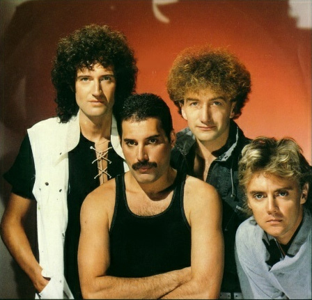

Queen
Years Active: 1970–present
Genre/s: Rock, pop
Label/s: EMI, Parlophone, Elektra, Capitol, Hollywood, Island, Virgin EMI
Members: Brian May, Roger Taylor
Queen are a British rock band formed in London in 1970 by Freddie Mercury (lead vocals, piano), Brian May (guitar, vocals), and Roger Taylor (drums, vocals), later joined by John Deacon (bass). Their earliest works were influenced by progressive rock, hard rock and heavy metal, but the band gradually ventured into more conventional and radio-friendly works by incorporating further styles, such as arena rock and pop rock.
Before forming Queen, May and Taylor had played together in the band Smile. Mercury was a fan of Smile and encouraged them to experiment with more elaborate stage and recording techniques. He joined in 1970 and suggested the name "Queen". Deacon was recruited in February 1971, before the band released their self-titled debut album in 1973. Queen first charted in the UK with their second album, Queen II, in 1974. Sheer Heart Attack later that year and A Night at the Opera in 1975 brought them international success. The latter featured "Bohemian Rhapsody", which topped the UK singles chart for nine weeks and helped popularise the music video format. The band's 1977 album News of the World contained "We Will Rock You" and "We Are the Champions", which have become anthems at sporting events. By the early 1980s, Queen were one of the biggest stadium rock bands in the world. "Another One Bites the Dust" from The Game (1980) became their best-selling single, and their 1981 compilation album Greatest Hits is the best-selling album in the UK and has been certified 9× Platinum in the US by the Recording Industry Association of America (RIAA). Their performance at the 1985 Live Aid concert is ranked among the greatest in rock history by various publications. In August 1986, Mercury gave his last performance with Queen at Knebworth, England.
Mercury was diagnosed with AIDS in 1987. The band released two more albums, The Miracle in 1989 and Innuendo in 1991. On 23 November 1991, Mercury publicly revealed his AIDS diagnosis, and the next day died of bronchopneumonia, a complication of AIDS. One more album was released featuring Mercury's vocals, 1995's Made in Heaven. Deacon retired in 1997, while May and Taylor continued to make sporadic appearances together. Since 2004, they have toured as "Queen +", with vocalists Paul Rodgers until 2009 and Adam Lambert since 2011.
Queen have been a global presence in popular culture for more than half a century. Estimates of their record sales range from 250 million to 300 million, making them one of the world's best-selling music artists. In 1990, Queen received the Brit Award for Outstanding Contribution to British Music. They were inducted into the Rock and Roll Hall of Fame in 2001, and with each member having composed hit singles, all four were inducted into the Songwriters Hall of Fame in 2003. In 2005, they received the Ivor Novello Award for Outstanding Song Collection from the British Academy of Songwriters, Composers, and Authors. In 2018, they were presented the Grammy Lifetime Achievement Award, and they were awarded the Polar Music Prize in 2025.